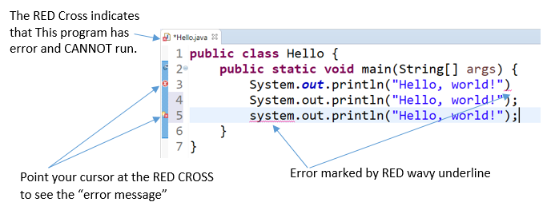
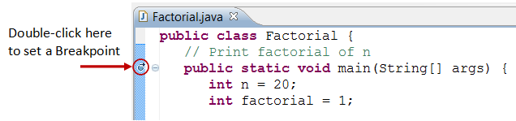
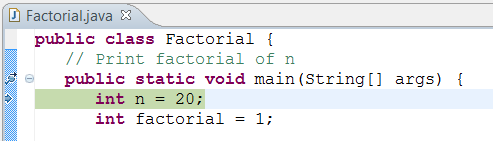
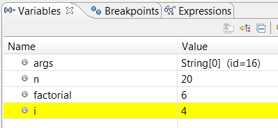
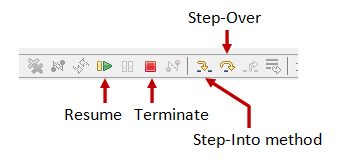

Eclipse (@ www.eclipse.org) is a free and open-source Integrated Development Environment (IDE) originally meant for Java. It originated from IBM's VisualAge (in 2001), and now maintained by Eclipse Foundation. Eclipse is a desktop app written mostly in Java. However, it uses its own Java graphics library known as SWT (Standard Widget Toolkit), instead of Java's Swing/AWT/JavaFX.
Eclipse is popular for Java application development (JavaSE and JavaEE/JakartaEE) and Android apps. It also supports C/C++, PHP, Python, Perl, and other web project developments via extensible plug-ins. Eclipse is cross-platform and runs under Windows, Linux and macOS.
Eclipse Versions
The various versions are:
- Eclipse 1.0 (November 7, 2001): based on an earlier Java IDE called VisualAge from IBM.
- Eclipse 2.0 (June 28, 2002)
- Eclipse 2.1 (March 28, 2003)
- Eclipse 3.0 (June 25, 2004)
- Eclipse 3.1 (June 28, 2005)
- Eclipse 3.2 (June 30, 2006) (Callisto - named after one of the Jupiter's Galilean moons): started annual simultaneous release of all the related Eclipse projects.
- Eclipse 3.3 (June 25, 2007) (Europa - named after another Jupiter's Galilean moons)
- Eclipse 3.4 (June 19, 2008) (Ganymede - named after yet another Jupiter's Galilean moons)
- Eclipse 3.5 (June 12, 2009) (Galileo - named after the great 17th century scientist and astronomer Galileo Galilei)
- Eclipse 3.6 (June 23, 2010) (Helios - named after god of the sun in Greek Mythology)
- Eclipse 3.7 (June 23, 2011) (Indigo)
- Eclipse 4.2 (June 27, 2012) (Juno)
- Eclipse 4.3 (June 2013) (Kepler)
- Eclipse 4.4 (June 2014) (Luna)
- Eclipse 4.5 (June 2015) (Mars)
- Eclipse 4.6 (June 2016) (Neon)
- Eclipse 4.7 (June 2017) (Oxygen)
- Eclipse 4.8 (June 2018) (Photon)
- Eclipse 2018-09 (4.9) (starting quarterly release), Eclipse 2018-12 (4.10)
- Eclipse 2019-03 (4.11), Eclipse 2019-06 (4.12), Eclipse 2019-09 (4.13), Eclipse 2019-12 (4.14)
- Eclipse 2020-03 (4.15), Eclipse 2020-06 (4.16), Eclipse 2020-09 (4.17), Eclipse 2020-12 (4.18)
- Eclipse 2021-03 (4.19), Eclipse 2021-06 (4.20), Eclipse 2021-09 (4.21), Eclipse 2021-12 (4.22)
- Eclipse 2022-03 (4.23), Eclipse 2022-06 (4.24), Eclipse 2022-09 (4.25), Eclipse 2022-12 R (4.26)
- Eclipse 2023-03 (4.27), Eclipse 2023-06 (4.28), Eclipse 2023-09 (4.29), Eclipse 2023-12 R (4.30)
I google "Best Java IDE" (in 2024). The first hit gives: IntelliJ IDEA, Eclipse, Apache NetBeans, Visual Studio Code (VS Code), Android Studio, ...
How to Install Eclipse IDE (202x-xx) for Java Developers
How to Install Eclipse on Windows
Step 0: Install JDK
To use Eclipse for Java programming, you need to first install Java Development Kit (JDK). Read "How to Install JDK for Windows".
Step 1: Download
Download Eclipse from https://www.eclipse.org/downloads/packages/. Choose "Eclipse IDE for Java Developers" and "Windows x86_64" (e.g., "eclipse-java-202x-xx-R-win32-x86_64.zip" - about 325MB) ⇒ Download.
Step 2: Unzip
Unzip the downloaded file into a directory of your choice (e.g., "c:\myProject").
I prefer the zip version, because there is no need to run an installer. Moreover, you can simply delete the entire Eclipse directory when it is no longer needed (without running any un-installer). You are free to move or rename the directory. You can install (unzip) multiple copies of Eclipse in the same machine.
How to Install Eclipse on macOS
To use Eclipse for Java programming, you need to first install JDK. Read "How to install JDK for macOS".
To install Eclipse:
- Goto https://www.eclipse.org/downloads/package/. Choose "Eclipse IDE for Java Developers" and "macOS AArch64" (for M1/M2/M3 ARM Processor) or "macOS x86_64" (for Intel processor). To find out which processor your mac has, google "How to tell what processor your mac has".
You will receive a Disk Image (DMG) file. - Double-click the downloaded DMG file. Follow the screen instructions to install Eclipse. Eclipse will be installed under "
/Applications/eclipse". (To check and confirm!)
How to Install Eclipse on Ubuntu Linux
Eclipse comes with many flavors (See "Eclipse Packages" @ https://www.eclipse.org/downloads/compare.php):
- To use Eclipse for Java programming, choose "Eclipse IDE for Java Developers" (JavaSE) or "Eclipse IDE for Enterprise Java and Web Developers" (JavaEE). You need to first install JDK. Read "How to install JDK on Ubuntu".
- To use Eclipse for PHP programming, choose "Eclipse IDE for PHP Developers".
- To use Eclipse for C/C++ programming, choose "Eclipse IDE for C/C++ Developers".
Nonetheless, you can install any package, and then add more features when needed.
To install Eclipse (e.g, for Java Programming):
- Download Eclipse from https://www.eclipse.org/downloads/. Under "Get Eclipse IDE 202x-xx" ⇒ Click the link "Download Packages" (instead of pushing the button "Download x86_64"). Choose "Eclipse IDE for Java Developers" for Java SE program development; or "Eclipse IDE for Enterprise Java and Web Developers" for developing JavaEE webapps ⇒ Linux x86_64. You will receive a tarball (e.g., "
eclipse-java|jee-2023-xx-R-linux-gtk-x86_64.tar.gz") in the "~/Downloads" folder. - We shall install Eclipse under
/usr/lib.// Unzip the tarball into /usr/lib $ cd /usr/lib $ sudo tar xzvf ~/Downloads/eclipse-jee-2023-xx-R-linux-gtk-x86_64.tar.gz // Extract the downloaded package // x: extract, z: for unzipping gz, v: verbose, f: filename // Extract into /usr/lib/eclipse // You can also unzip in "File Explorer" by double-clicking the tarball. // Set up a symlink in /usr/bin (which is in the PATH) $ cd /usr/bin $ sudo ln -s /usr/lib/eclipse/eclipse // Make a symlink in /usr/bin for the eclipse executable $ ls -ld /usr/bin/eclipse lrwxrwxrwx 1 root root 26 Aug 30 11:53 /usr/bin/eclipse -> /usr/lib/eclipse/eclipse $ which eclipse /usr/bin/eclipse $ whereis eclipse eclipse: /usr/bin/eclipse /usr/lib/eclipse // Change Owner recursive(-R) $ cd /usr/lib/eclipse $ sudo chown -R <user>:<group> . // Change Mode recursive(-R) $ cd /usr/lib/eclipse $ sudo chmod -R <mode> .
To run Eclipse, open the "/usr/lib/eclipse" folder and click on the "Eclipse" icon; or start a "Terminal", enter "eclipse".
Lock Eclipse on Launcher
Start Eclipse ⇒ Right-click the Eclipse icon ⇒ "Lock to Launcher" or "Add to Favorite".
(If the above doesn't work) Create a /usr/share/applications/eclipse.desktop (or ~/.local/share/applications/eclipse.desktop) file with the following contents:
$ sudo nano ~/.local/share/applications/eclipse.desktop
[Desktop Entry] Type=Application Name=Eclipse Comment=Eclipse Integrated Development Environment Icon=/usr/lib/eclipse/icon.xpm Exec=/usr/lib/eclipse/eclipse Terminal=false Categories=IDE StartupWMClass=Eclipse
Set permission to executable (?!):
$ chmod a+x ~/.local/share/applications/eclipse.desktop
Start Eclipse, right-click on the Eclipse icon on launcher ⇒ "Lock to launcher".
Updating Eclipse
For example, to add "Eclipse for PHP Developers" (@ https://www.eclipse.org/pdt/): In Eclipse, click Help ⇒ Install New Software and work with ⇒ type: https://download.eclipse.org/tools/pdt/updates/7.2 ⇒ Check "PHP Development Tools" (PDT), no need for "PHP Development Tools (SDK)".
Writing your First Java Program in Eclipse
Step 0: Launch Eclipse
- Launch Eclipse by running "
eclipse.exe" from the Eclipse installed directory. - In "Select a directory as workspace" dialog ⇒ Choose an appropriate directory for your workspace, i.e., the directory (or folder) that you would like to save your files (e.g.,
c:\myProject\eclipse_workspacefor Windows) ⇒ Launch. - If the "Welcome" screen shows up, CLOSE it by clicking the "close" button next to the "Welcome" title.
Step 1: Create a new Java Project
For each Java application, you need to create a project to keep all the source files, classes and relevant resources.To create a new "Java project":
- Choose "File" ⇒ "New" ⇒ "Project" ⇒ "Java" ⇒ "Java project" (or "File" ⇒ "New" ⇒ "Java project").
- In "Create a Java Project" dialog:
- In "Project name", enter "
FirstProject". - Check "Use default location".
- In "JRE", select "Use default JRE 'xxx' and workspace compiler preferences".
- In "Project Layout", check "Use project folder as root for sources and class files".
- In " Module ", UN-CHECK "Create module-info.java" file . We are NOT using module.
- "Finish".
- In "Project name", enter "
- If "Create module-info.java" dialog appears, Click " Don't Create".
- If you accidentally created "
module-info.java" in your project (shown in "Package Explorer" under "src"), simply DELETE it.
Step 2: Write a Hello-world Java Class under the Project Created
- In the "Package Explorer" (leftmost pane) ⇒ Right-click on "
FirstProject" (or use the "File" menu) ⇒ New ⇒ Class. - In "Java Class" dialog:
- In "Source folder", keep the "FirstProject".
- In " Package ", leave it EMPTY. DELETE the content if it is NOT empty.
- In "Name", enter "
Hello". - Check "
public static void main(String[] args)". - Don't change the rest.
- "Finish"
- The source file "
Hello.java" opens on the editor panel (the center pane). Enter the following codes:public class Hello { public static void main(String[] args) { System.out.println("hello, world"); } }
Step 3: Compile & Execute the Java Program
- There is no need to compile the Java source file in Eclipse explicitly. It is because Eclipse performs the so-called incremental compilation, i.e., the Java statement is compiled as and when it is entered.
- To run the program, right-click anywhere on the source file "
Hello.java" (or choose "Run" menu) ⇒ "Run As" ⇒ "Java Application". - The output "hello, world" appears on the "Console" pane (the bottom pane).
NOTES:
- You should create a NEW Java "project" for EACH of your Java application.
- Nonetheless, Eclipse allows you to keep more than one programs (classes) in a project, which is handy for writing toy programs (such as your tutorial exercises - you can keep many exercises in one project). To run a particular program, open and right-click on the source file ⇒ Run As ⇒ Java Application.
- Clicking the "Run" button (with a "Play" icon) runs the recently-run program (based on the previous configuration). Try clicking on the "down-arrow" besides the "Run" button.
Correcting Syntax Errors
Eclipse performs incremented compilation, as and when a source "line" is entered. It marked a source line having syntax error with a RED CROSS. Place your cursor at the RED CROSS to view the error message.
You CANNOT RUN the program if there is any syntax error (marked by a RED CROSS before the filename). Correct all the syntax errors; and RUN the program.
HINTS: In some cases, Eclipse shows a ORANGE LIGHT-BULB (for HINTS) next to the ERROR RED-CROSS (Line 5 in the above diagram). You can click on the LIGHT-BULB to get a list of HINTS to resolve this particular error, which may or may not work!
SYNTAX WARNING: marked by a orange triangular exclamation sign. Unlike errors, warnings may or may not cause problems. Try to fix these warnings as well. But you can RUN your program with warnings.
JDK's Javadoc
You can read the Javadoc of a method, by placing the mouse cursor over the method.
Read the Eclipse Documentation
At a minimum, you SHOULD browse through Eclipse's "Workbench User Guide" and "Java Development User Guide" - accessible via the Eclipse's "Welcome" page or "Help" menu. This will save you many agonizing hours trying to figure out how to do somethings later.
Debugging Programs in Eclipse
Able to use a graphics debugger to debug program is crucial in programming. It could save you countless hours guessing on what went wrong.
Step 0: Write a Java Program
The following program computes and prints the factorial of n (=1*2*3*...*n). The program, however, has a logical error and produce a wrong answer for n=20 ("The Factorial of 20 is -2102132736" - a negative number?!).
/** Compute the Factorial of n, where n=20.
* n! = 1*2*3*...*n
*/
public class Factorial {
public static void main(String[] args) {
int n = 20; // To compute factorial of n
int factorial = 1; // Init the product to 1
int i = 1;
while (i <= n) {
factorial = factorial * i;
i++;
}
System.out.println("The Factorial of " + n + " is " + factorial);
}
}Let's use the graphic debugger to debug the program.
Step 1: Set an Initial Breakpoint
A breakpoint suspends program execution for you to examine the internal states (e.g., value of variables) of the program. Before starting the debugger, you need to set at least one breakpoint to suspend the execution inside the program. Set a breakpoint at main() method by double-clicking on the left-margin of the line containing main(). A blue circle appears in the left-margin indicating a breakpoint is set at that line.
Step 2: Start Debugger
Right click anywhere on the source code (or from the "Run" menu) ⇒ "Debug As" ⇒ "Java Application" ⇒ choose "Yes" to switch into "Debug" perspective (A perspective is a particular arrangement of panels to suits a certain development task such as editing or debugging). The program begins execution but suspends its operation at the breakpoint, i.e., the main() method.
As illustrated in the following diagram, the highlighted line (also pointed to by a blue arrow) indicates the statement to be executed in the next step.
Step 3: Step-Over and Watch the Variables and Outputs
 Click the "Step Over" button (or select "Step Over" from "Run" menu) to single-step thru your program. At each of the step, examine the value of the variables (in the "Variable" panel) and the outputs produced by your program (in the "Console" Panel), if any. You can also place your cursor at any variable to inspect the content of the variable.
Single-stepping thru the program and watching the values of internal variables and the outputs produced is the ultimate mean in debugging programs - because it is exactly how the computer runs your program!
Step 4: Breakpoint, Run-To-Line, Resume and Terminate
As mentioned, a breakpoint suspends program execution and let you examine the internal states of the program. To set a breakpoint on a particular statement, double-click the left-margin of that line (or select "Toggle Breakpoint" from "Run" menu).
"Resume" continues the program execution, up to the next breakpoint, or till the end of the program.
"Single-step" thru a loop with a large count is time-consuming. You could set a breakpoint at the statement immediately outside the loop (e.g., Line 11 of the above program), and issue "Resume" to complete the loop.
Alternatively, you can place the cursor on a particular statement, and issue "Run-To-Line" from the "Run" menu to continue execution up to the line.
"Terminate" ends the debugging session. Always terminate your current debugging session using "Terminate" or "Resume" till the end of the program.
Step 5: Switching Back to Java perspective
Click the "Java" perspective icon on the upper-right corner to switch back to the "Java" perspective for further programming (or "Window" menu ⇒ Open Perspective ⇒ Java).
Important: I can's stress more that mastering the use of debugger is crucial in programming. Explore the features provided by the debuggers.
Other Debugger's Features
Step-Into and Step-Return: To debug a method, you need to use "Step-Into" to step into the first statement of the method. ("Step-Over" runs the function in a single step without stepping through the statements within the function.) You could use "Step-Return" to return back to the caller, anywhere within the method. Alternatively, you could set a breakpoint inside a method.
Modify the Value of a Variable: You can modify the value of a variable by entering a new value in the "Variable" panel. This is handy for temporarily modifying the behavior of a program, without changing the source code.
Tips & Tricks
General Usages (for all Programming Tasks)
These are the features that I find to be most useful in Eclipse:
- Maximizing Window (Double-Clicking): You can double-click on the "header" of any panel to maximize that particular panel, and double-click again to restore it back. This feature is particularly useful for writing source code in full panel.
- Shorthand Templates (sysout, for, main, ...): You can type "
sysout" followed by a Ctrl+Space (or alt-/) as a shorthand for typing "System.out.println()". In fact, you only need to type "syso" (to differentiate fromsyserr) and Ctrl+Space.
The default shortcut key (ctrl-space or alt-/) depends on the system. Check your system's shortcut key setting in "Edit" ⇒ "Content Assist" ⇒ "Default". Take note that many of you use Ctrl+Space to switch between input languages. You need to reconfigure either your language switching hot-key or Eclipse.
Similarly, you can type "for" followed by Ctrl+Space (or alt-/) to get a for-loop; or "sw" + Ctrl+Space for switch-case.
You can create your own shorthand in "Window" menu ⇒ "Preferences" ⇒ "Java" ⇒ "Editor" ⇒ "Templates". (Alternatively, in "Window" ⇒ "Preferences" ⇒ type "template" as filter text and choose "Java" ⇒ "Editor" ⇒ "Templates".)
E.g. To define the main method: Goto template ⇒ new ⇒ name="main", context="Java", pattern:
public static void main(String[] args) { ${cursor} }You can change your key settings in "Window" menu ⇒ "Preferences" ⇒ "General" ⇒ "Key" ⇒ choose "Command", "Content Assist". (Alternatively, in "Window" ⇒ "Preferences" ⇒ type "key" as filter text and choose "General" ⇒ "Key".) - Intelli-Sense (ctrl-space): You can use ctrl-space to activate the "intelli-sense" (or content assist). That is, Eclipse will offer you the choices, while you are typing.
- Source Formatting (ctrl-shift-f): Right-click on the source. Choose "Source" ⇒ "Format" to let Eclipse to layout your source codes with the proper indentation.
- Source Toggle Comment (ctrl-/): To comment/uncomment a block of codes, choose "Source" ⇒ "Toggle Comment".
- Hints for Correcting Syntax Error: If there is a syntax error on a statement, a red mark will show up on the left-margin on that statement. You could click on the "light bulb" to display the error message, and also select from the available hints for correcting that syntax error.
- Refactor (or Rename) (alt-shift-r): You can rename a variable, method, class, package or even the project easily in Eclipse. Select and right-click on the entity to be renamed ⇒ "Refactor" ⇒ "Rename". Eclipse can rename all the occurrences of the entity.
- Line Numbers: To show the line numbers, choose "Window" menu ⇒ "Preferences" ⇒ "General" ⇒ "Editors" ⇒ "Text Editors" ⇒ Check the "Show Line Numbers" Box. You can also configure many editor options, such as the number of spaces for tab. Alternatively, you can right-click on the left-margin, and check "Show Line Numbers".
- Error Message Hyperlink: Click on an error message will hyperlink to the corresponding source statement.
- Changing Font Type and Size: From "Window" menu ⇒ "Preferences" ⇒ "General" ⇒ "Appearance" ⇒ "Colors and Fonts" ⇒ expand "Java" ⇒ "Java Editor Text Font" ⇒ "Edit". (Alternatively, in "Window" ⇒ "Preferences" ⇒ type "font" as filter text and choose the appropriate entry.)
- Unicode Support: To enable Unicode support, select "Window" menu ⇒ Preferences ⇒ General ⇒ Workspace ⇒ Text file encoding ⇒ UTF-8. This sets the default character set used for file encoding, similar to VM's command-line option
-Dfile.encoding=UTF-8. Commonly used charsets for Unicode are UTF-8, UTF-16 (with BOM), UTF-16BE, UTF-16LE. Other charsets are US-ASCII, ISO-8859-1. - Mouse Hover-over: In debug mode, you could configure to show the variable's value when the mouse hovers over the variable. Select "Window" menu ⇒ "Preferences" ⇒ "Java" ⇒ "Editor" ⇒ "Hover".
- Comparing Two Files: In "Package Explorer", select two files (hold the control key) ⇒ Right-click ⇒ Compare with ⇒ Each Other.
- Setting Keyboard Shortcut Keys: You can set/change the keyboard shortcut keys at "Window" ⇒ "Preferences" ⇒ "General" ⇒ "Key".
I like to set the frequently-used commands to Ctrl-1 to Ctrl-10, for examples, "Run Java Application" to "Ctrl-1", etc. - Useful Eclipse Shortcut Keys:
- F3: Goto the declaration of the highlighted variable/method.
- Ctrl-Shift-G: Search for ALL references of the highlighted variable/method in workspace.
- Ctrl-G: Search for the Declaration of a variable/method in workspace.
Don't use Find (Ctrl-F), but use the above context-sensitive search. - Ctrl-Shift-F: Format the source code.
- Ctrl-Shift-O: Organize imports.
- Alt-Shift-R: Rename. (Don't use Find/Replace.)
- Ctrl-Space: auto-complete.
- Package Explorer vs. Navigator: We usually use "Package Explorer" in programming, but it will not show you all the folders and files under the project. On the other hand, "Navigator" is a file manager that shows the exact file structure of the project (similar to Windows Explorer). You can enable the Navigator by "Window" ⇒ Show view ⇒ Navigator.
- Spell Check: To enable spell check, select Window ⇒ Preferences ⇒ type "spell" in the filter ⇒ General ⇒ Editors ⇒ Text Editors ⇒ Spelling ⇒ Check "Enable spell checking". Also provide a "User defined dictionary" (with an initially empty text file).
To correct mis-spell words, right-click and press ctrl-1 (or Edit menu ⇒ Quick Fix). - Eclipse's Log File: Goto Help ⇒ about Eclipse ⇒ Installation details ⇒ Configuration ⇒ View Error Log.
- Viewing two files in split screen: Simply click and hold on the title of one file and drag it to the editor screen. You can split horizontally or vertically by varying the drag target.
To view the SAME file on split screen, create a new editor window by selecting Window ⇒ New Editor; and drag one window to the lower side of the screen. Alternatively, select Window ⇒ Editor ⇒ Toggle Split Editor (Horizontal) or Toggle Split Editor (Vertical). - Block Select (Column Select): Push Alt-Shift-A to toggle between block-select mode and normal mode.
- Snippets:
- To view the snippet window: choose "Window" ⇒ Show View ⇒ Snippets.
- To create a new snippet category: Right-click ⇒ Customize ⇒ New.
- To create a new snippet item: Copy the desired text ⇒ Select the snippet category ⇒ paste as snippet.
- To insert a snippet: place the cursor on the desired location at the editor panel ⇒ click the snippet item.
- Word Wrap (Line Wrap): Word-wrap (or line-wrap) is essential for editing long HTML documents without the horizontal scroll bar. However, the Eclipse's HTML Editor and Text Editor do not support word-wrap.
You could install a plug-in called "Word Wrap" from https://ahtik.com/eclipse-update/.
Choose "Help" ⇒ Install New Software ⇒ in "Work with" Enter "https://ahtik.com/eclipse-update/".
To activate word wrap, right-click on the editor panel ⇒ select "Word Wrap". - Creating "link folder" in project: You do not have to place all the folders under the project base directory, instead, you can use so-called "link folders" to link to folder outside the project base directory.
To create a link folder in a project, right-click on the project ⇒ File ⇒ New ⇒ Folder ⇒ Advanced ⇒ Check Link to alternate Location (Linked Folder). - Running Eclipse in "clean" mode: You can run eclipse in so-called "
clean" mode, which wipes all the cached data and re-initialize the cache, by running eclipse from command-line with "-clean" argument (i.e., "eclipse -clean"). It is useful if something is not working proper, especially if you install a new copy of Eclipse. - Show the Right Margin: Window ⇒ Preferences ⇒ General ⇒ Editors ⇒ Text Editors ⇒ Show Print Margin and set the column number.
- Zoom in/out (ctrl++ or ctrl+-)
- Let me know if you have more tips to be included here.
Update Eclipse and Install new Software
- Install New Software: Select "Help" menu ⇒ Install New Software ⇒ In "Work With", pull down the select menu and choose a software site.
- Update: Select "Help" menu ⇒ Check for Updates.
For Java Application Development Only
- JRE: In "Create a new Java Project", you could choose "Use default JRE 'xxx' and workspace compiler preferences".
- To set the default JRE (or add new JRE): Window ⇒ Preferences ⇒ Java ⇒ Installed JRE.
- To set compiler preferences: Window ⇒ Preferences ⇒ Java ⇒ Compiler ⇒ Check Compiler compliance level. You can also set
--release--enable-previewoptions.
- Module (JDK 9): JDK 9 introduces Java Platform Module System (JPMS). Module is configured via a
module-info.javafile. You could DELETEmodule-info.javaif you do not want to use module.- Module & Default Package: JPMS forbids having
.javafiles in the default package. If you don't want to use JPMS and if you want to put .java files into the default package, simply delete themodule-info.javafile.
(The error message is: "Must declare a named package because this compilation unit is associated to the named module 'xxx'".) - Converting to Module: A non-JPMS project can be converted to a JPMS project by adding a
module-info.javafile: Right-click the project ⇒ "Configure" ⇒ "Createmodule-info.java". - Module and AWT/Swing: The AWT/Swing packages are kept in
java.desktopmodule (instead of the COREjava.basemodule). If you use module for AWT/Swing applications, you need to put the classes in proper packages (NOT default package) and add the following directive tomodule-info.java:module moduleName { requires java.desktop; }(The error message is: "The package java.awt is not accessible".)
- Module & Default Package: JPMS forbids having
- Small Toy Java Programs: You can keep many small programs (with
main()) in one Java project instead of create a new project for each toy program. To run the desired program, right-click on the source file ⇒ "Run as" ⇒ "Java Application". Scanner/printf()(JDK 1.5): If you encounter syntax error in usingprintf()orScanner(which are available from JDK 1.5), you need to check your compiler settings. Select "Window" ⇒ Preferences ⇒ Java ⇒ Compiler ⇒ in "Compiler compliance level" ⇒ select the latest release, which should be "1.5" or above.- Command-Line Arguments: To provide command-line arguments to your Java program in Eclipse, right-click on the source file ⇒ "Run Configurations" ⇒ Under the "Main" panel, check that "Project" name and "Main Class" are appropriate ⇒ Select the "Argument" tab ⇒ type your command-line arguments inside the "Program Arguments" box ⇒ "Run".
- Resolving Import (Ctrl-Shift-o): To ask Eclipse to insert the
importstatements for classes. Useful when you copy a large chunk of codes without the corresponding import statements. - Including Another Project: To include another project in the same work space, right-click on the project ⇒ Build Path ⇒ Configure Build Path... ⇒ Select "Projects" tab ⇒ "Add..." to select project in the existing work space ⇒ OK.
- Exporting a Project to a JAR file: Right-click on the project ⇒ Export... ⇒ Java, JAR File ⇒ Next ⇒ Select the files to be exported ⇒ Next ⇒ Next ⇒ In "JAR Manifest Specification" dialog, enter the main class (if you wish to run the JAR file directly) ⇒ Finish.
- Unit Testing: If you keep your test in another project, you need to include the project under test in your Build Path (see above).
To create a test case: Right-click on the project ⇒ New ⇒ JUnit Test Case ⇒ the "New JUnit Test Case" dialog appears. Select "New JUnit 4 Test". In "Name", enter your class name. In "Class under test", browse and select the class to be tested.
To run the test: Right-click ⇒ "Run As" ⇒ "JUnit Test". The results are displayed in a special "JUnit console". - Adding External JAR files & Native Libraries ("
.dll", ".lib", ".a", ".so"): Many external Java packages (such as JOGL, Java3D, JAMA, etc) are available to extend the functions of JDK. These packages typically provide a "lib" directory containing JAR files (".jar") (Java Archive - a single-file package of Java classes) and native libraries (".dll", ".lib" for windows, ".a", ".so" for Linux and macOS).
To include these external packages into an Eclipse's project, right-click on the project ⇒ Build Path ⇒ Add External Archives ⇒ Navigate to select the JAR files (".jar") to be included.
In "Package Explorer", right-click on the JAR file added ⇒ Properties:- To include native libraries ("
.dll", ".lib", ".a", ".so"), select "Native Library" ⇒ "Location Path" ⇒ "External Folder". - To include the javadoc, select "JavaDoc Location" ⇒ "JavaDoc URL" ⇒ You can specify a local file or a remote link.
- To include source file (for debugging), select "Java Source Attachment".
Notes: The JAR files must be included in theCLASSPATH. The native library directories must be included in JRE's property "java.library.path", which normally but not necessarily includes all the paths from thePATHenvironment variable. Read "External JAR files and Native Libraries". - To include native libraries ("
- Creating a User Library: You can also create a Eclipse's user library to include a set of JAR files and native libraries, that can then be added into subsequent Eclipse projects.
For example, I created a user library for "JOGL" as follows:
- From "Window" menu ⇒ Preferences ⇒ Java ⇒ Build Path ⇒ User Libraries ⇒ New ⇒ In "User library name", enter "
jogl". The "User Library" dialog appears. - In "User Library" dialog ⇒ Select "
jogl" ⇒ Add JAR... ⇒ Navigate to<JOGL_HOME>/lib, and select "gluegen-rt.jar" and "jogl.jar". - Expand the "
jogl.jar" node ⇒ Select "Native library location: (none)" ⇒ Edit... ⇒ External Folder... ⇒ select<JOGL_HOME>/lib. - Expand the "
jogl.jar" node ⇒ Select "Javadoc location: (none)"⇒ Edit... ⇒ Javadoc in archive ⇒ In "Archive Path", "Browse" and select the downloaded JOGL API documentation zip-file ⇒ In "Path within archive", "Browse" and expand the zip-file to select the top-level path (if any) ⇒ Validate. Alternatively, you can provide the path to the un-zipped javadocs. This is needed for Eclipse to display javadoc information about classes, fields, and methods. - You may provide the source files by editing "Source attachment: (none)". Source is needed only if you are interested to debug into the JOGL source codes.
jogl". - From "Window" menu ⇒ Preferences ⇒ Java ⇒ Build Path ⇒ User Libraries ⇒ New ⇒ In "User library name", enter "
- Running an External Program: Suppose that you want to run a Perl script on the selected file, you can configure an external tool as follows:
- From "Run" menu ⇒ External Tools ⇒ External Tools Configuration... ⇒ The "External Tools Configuration" dialog appears.
- In "Name", enter your tool name.
- Choose the "Main" tab ⇒ In "Location", "Browse File System..." to choose the perl interpreter "perl" ⇒ In "Arguments", enter "
path/scriptname.pl ${resource_loc}", where${resource_loc}is an Eclipse variable that denotes the currently selected resource with absolute path. - Choose the "Common" tab ⇒ In "Standard Input and Output", uncheck "Allocate Console", check "File" and provide an output file (e.g.,
d:\temp\${resource_name}.txt). - (If you use the CYGWIN perl interpreter, need to set environment variable CYGWIN=nodosfilewarning to disable warning message.)
- Viewing Hex Code of Primitive Variables in Debug mode: In debug perspective, "Variable" panel ⇒ Select the "menu" (inverted triangle) ⇒ Java ⇒ Java Preferences... ⇒ Primitive Display Options ⇒ Check "Display hexadecimal values (byte, short, char, int, long)".
- Adding a New Version of JDK/JRE: First, you can check the installed JDK/JRE via "Window" menu ⇒ "Preferences" ⇒ Expand "Java" node ⇒ "Installed JREs". Check the "Location" current JRE installed to make sure that it is the intended one. You can use the "Add" button to add a new version of JRE. For program development, I recommend that you add the JDK (instead of JRE). [The "Location" decides the extension directory used for including additional JAR files, e.g.,
$JAVA_HOME\jre\lib\ext.] - To highlight matching variables: Select Window ⇒ Preferences ⇒ Java ⇒ Editor ⇒ Mark Occurrences.
For Web Developers
- HTML Editor: Use the "Web Page Editor" (available in Eclipse Java EE), which provides the design view (WYSISYG).
To use the "Web Page Editor", right-click on the HTML file, open as "Web Page Editor".
To make the "Web Page Editor" as default for HTML file, goto Window ⇒ Preferences ⇒ General ⇒ Editor ⇒ File Associations ⇒ .htm and .html ⇒ Select "Web page editor" ⇒ default.
File I/O in Eclipse
The question always is: where to place the files or external resources?
The following program create and write to a text file "out.txt" (via java.util.Formatter), and read it back (via java.util.Scanner). I do the write first so that you can check the location of the external files under eclipse, which is at the project base directory, at the same level as the "src" and "bin".
import java.util.Scanner;
import java.util.Formatter;
import java.io.File;
import java.io.FileNotFoundException;
public class TestFileIO {
public static void main (String [] args) {
// Create and write text file - You can check the location of the file created
try {
Formatter out = new Formatter(new File("out.txt")); // filename only, no path
out.format("%d %f %s%n", 1234, 55.66, "hello");
out.close(); // flush the output and close the output file
} catch (FileNotFoundException e) {
e.printStackTrace();
}
// Read text file
try {
Scanner in = new Scanner(new File("out.txt"));
int i = in.nextInt();
double d = in.nextDouble();
String s = in.next();
in.close();
System.out.printf("%d %f %s%n", i, d, s);
} catch (FileNotFoundException e) {
e.printStackTrace();
}
}
}Notes:
- You can create you input file from eclipse directly via "File" menu ⇒ "New" ⇒ "File" or "Text File".
- You may need to right-click the project and select "Refresh" to see the output file created in the package explorer.
- Remember to add a newline to the end of your input file.
Using URL to Read Audio and Image Files
If you use the URL to read an audio or Image files, then place the files under "src" (instead of the project base directory), which will be copied into the "bin" directory.
URL url = this.getClass().getClassLoader().getResource(filename);
Writing Swing Applications using Eclipse GUI Builder
Eclipse provides a visual GUI builder called "WindowBuilder" (@ https://www.eclipse.org/windowbuilder), which supports AWT/Swing, SWT (Eclipse's Standard Widget Toolkit - an alternative to JDK's AWT/Swing), XWT, GWT, eRCT.
Step 0: Install WindowBuilder
To install "WindowBuilder", goto "Help" ⇒ Install New Software ⇒ In "Work with", enter "https://download.eclipse.org/windowbuilder/latest/" (You can find the proper link from "https://www.eclipse.org/windowbuilder/download.php") ⇒ Check "WindowBuilder" ⇒ Next ⇒ Next ⇒ Accept the license ⇒ Finish.
Step 1: Create a New "Java Application" Project
- Choose "File" menu ⇒ "New" ⇒ "Java project".
- The "New Java Project" dialog pops up.
- In the "Project name" field, enter "
FirstSwingProject". - Check "Use default location".
- In the "JRE" box, select "Use default JRE (currently 'JDK1.x')".
- Click "Finish".
- In the "Project name" field, enter "
Step 2: Create a Swing JFrame Subclass
- Choose "File" menu ⇒ "New" ⇒ "Others" ⇒ "WindowBuilder" ⇒ "Swing Designer" ⇒ "JFrame" ⇒ "Next".
- In the "Create JFrame" dialog ⇒ Enter "SwingMain" in the "Name" field ⇒ "Finish".
- Select the "Design" pane.
- In "Layouts", select "FlowLayout" and click on the "design form".
- From "Components", select "
JLabel" and click on the design form. Change the label text to "Counter: ". Select a "JTextField" and place it on the design form. Change the text to "0". Select a "JButton" and place it on the design form. Change the text label to "Count". - To attach a event-handler to the button, double-click the
JButtonto switch into the "Source" pane, with the event-handler skeleton created. Complete theactionPerformed()as follows:public void actionPerformed(ActionEvent e) { count++; textField.setText(count + ""); // Check the name for the TextField }Add an instance variable calledcountas follow:public class SwingMain extends JFrame { private int count = 0; ...... - You can now ready run the program. Right-click on the project ⇒ Run As ⇒ Java Application.
Eclipse Generated Codes
Study the codes generated by Eclipse GUI Builder, as follows, which is just a typical Swing application.
import java.awt.*;
import java.awt.event.*;
import javax.swing.*;
import javax.swing.border.EmptyBorder;
public class SwingMain extends JFrame { // A JFrame application
// Define private variables of all the GUI components
private JPanel contentPane;
private JTextField textField;
private int count = 0;
/**
* Launch the application.
*/
public static void main(String[] args) {
EventQueue.invokeLater(new Runnable() { // same as SwingUtilities.invokeLater()
@Override
public void run() {
try {
SwingMain frame = new SwingMain();
frame.setVisible(true);
} catch (Exception e) {
e.printStackTrace();
}
}
});
}
/**
* Create the frame.
*/
public SwingMain() {
setDefaultCloseOperation(JFrame.EXIT_ON_CLOSE);
setBounds(100, 100, 450, 300);
contentPane = new JPanel();
contentPane.setBorder(new EmptyBorder(5, 5, 5, 5));
setContentPane(contentPane);
contentPane.setLayout(new FlowLayout(FlowLayout.CENTER, 5, 5));
JLabel lblNewLabel = new JLabel("Counter: ");
contentPane.add(lblNewLabel);
textField = new JTextField();
textField.setText("0");
contentPane.add(textField);
textField.setColumns(10);
JButton btnCount = new JButton("Count");
btnCount.addActionListener(new ActionListener() {
@Override
public void actionPerformed(ActionEvent e) {
count++;
textField.setText(count + "");
}
});
contentPane.add(btnCount);
}
}Eclipse for C/C++ Programming
HERE.
Eclipse PDT (PHP Development Tool)
HERE.
Eclipse Jakarta/Java EE for Web and Database Development
HERE.
REFERENCES & RESOURCES
- Eclipse mother site @ https://www.eclipse.org.
- Eclipse documentation and user guides, accessible via Eclipse's Help and menu.